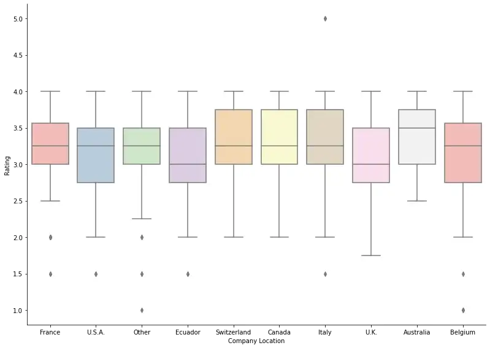

 Looks like Switzerland, Canada, and Italy make up for the less quantity with great quality. Australia has the highest median rating of 3.5. Italy seems to be the only country to have a rating higher than 4.
Back to homepage